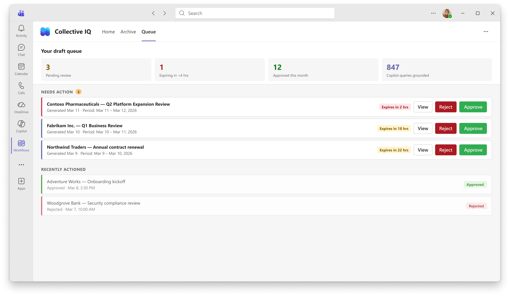
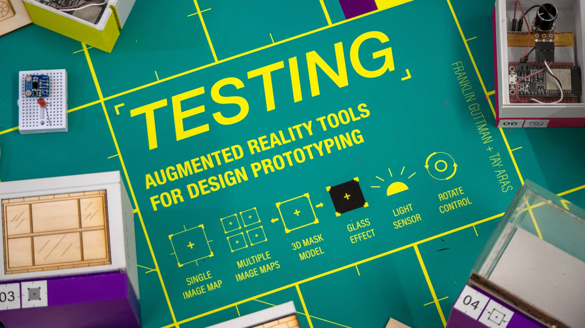

Overview
Copilot's intelligence is bounded by individual participation.
An account team of eight people each hold a piece of a customer relationship — meetings attended, calls taken, emails exchanged — and none of that context reaches anyone else on the team. Collective IQ was designed to close that gap: to extract organizational knowledge from communication artifacts and make it available as trusted grounding data for Copilot.
The design challenge wasn't building a sharing feature. It was creating a new category of trust-governed behavior that felt safe enough for individuals to opt into and legitimate enough for organizations to govern — without making private conversations feel like a liability.
I owned the interaction model from scratch, working from a general strategic direction to six full design approaches across different surfaces and modalities. The approach that advanced to MVP was mine; the others are carrying into phases 2 and 3. I drove design execution across the complete contributor experience — from pre-meeting transparency through post-meeting sharing, receipts, governance, and the pull surfaces that surface knowledge gaps over time.


Context
From individual meeting rooms to shared organizational memory.
The strategic gap CIQ addresses was already proven externally. Gong and Glean had established that organizations would pay for AI that knows what the organization knows — not just what a single user knows. The opportunity inside Microsoft was real: valuable customer context lived in each participant's private data envelope, invisible to the rest of the account team, even when sharing it would make every subsequent customer interaction meaningfully better.
Sales was chosen as the first segment because customer-brief scenarios expose the gap most clearly. When preparing for any significant customer meeting, an account team needs cross-channel context: who else has talked to this customer, what was discussed, what was decided, what's still pending. That information exists in individual meeting histories. CIQ was designed to make it accessible.
Each touchpoint had a different role in the system:
- Meetings create raw context through conversation
- The Teams feed surfaces AI summaries and prompts contribution
- Sharing defines visibility and access across the organization
- Copilot retrieves and uses this context in future workflows
This system introduces a new step between communication and knowledge: a deliberate act of contribution.
Private communication
Meeting context begins inside an implicit trust boundary.
AI summary
The raw conversation is transformed into a reduced artifact.
Contributor decision
The user reviews, approves, scopes, or declines sharing.
Shared knowledge
Approved context becomes available to the selected audience.
Copilot grounding
Future answers can draw from trusted organizational context.
Problem
Communication is sensitive by default.
Conversations include negotiation, uncertainty, and early thinking. Sharing them introduces risk, especially in customer-facing scenarios where context directly impacts decisions.
The hardest part of this project was balancing contributor control with system usefulness. Too much control reduces contribution. Too little breaks trust.
At the same time, this system needed to exist across multiple touchpoints in Microsoft Teams and Copilot. Knowledge is created in meetings, surfaced in feeds, and later retrieved in entirely different contexts like search or AI responses.

Why this was hard
The product definition was still evolving as I was designing it.
What the MVP should include, who should own the sharing action, how topics and categories should work — these were open, contested questions throughout. I was setting the interaction model while the product model beneath it was still being defined.
Compliance wasn't a constraint that arrived at the end. I worked directly with legal and compliance review throughout — copy choices, card states, data model decisions, and consent prompt timing were all shaped by compliance requirements as much as by UX preference.
The design brief held two scales simultaneously: build for Teams meetings now, and build something that eventually generalizes to email, channels, and chats. Every structural decision — the contributor/beneficiary model, the summary-scoped sharing, the governance layer — had to work at both scales without collapsing into something too specific to extend.
Design
A post-meeting decision moment.
This moment determines whether private context becomes shared organizational knowledge.
Without this step, the system either shares too much or becomes unusable.
This is the point where trust is maintained or broken.


System
Control is expressed through the interaction.


Decisions
Key tradeoffs defined the product.
Summaries instead of transcripts
Sharing transcripts would expose negotiation, uncertainty, and incomplete thinking. This would reduce trust and block adoption.
Summaries reduce exposure while preserving enough context to be useful. This tradeoff made sharing viable.

Friction for trust
Automatic sharing would increase coverage but remove control. This would break trust quickly.
A deliberate review step ensures contributors remain in control, making the system acceptable to the people whose participation it depends on.

Simplification over flexibility
Introducing more roles, categories, and review surfaces increased flexibility but created cognitive overhead that stalled contribution.
Reducing system complexity — fewer states, a single primary action, a clearer scope model — made contribution easier to understand and more likely to happen.

States
The system reflects real conditions.


Impact
A new category of organizational behavior, made viable.
Before this, communication remained participant-scoped. An account team's customer context existed in individual meeting histories and never reached the people who needed it most.
The contribution model made it possible to share AI-summarized meeting context without exposing sensitive detail — creating a foundation for Copilot to ground its answers in trusted organizational knowledge rather than just the current user's data.
In practice: account teams could walk into customer meetings with full context on prior conversations, even ones they weren't part of. Knowledge stopped being locked to the individuals in the room.

Want the full walkthrough? Get in touch →
Next Project
Physicalization
of AR/XR
CMU Bachelor of Design thesis. A system of haptic and physical proxies that extend augmented reality interactions into the real world, bridging digital and material space at the interaction layer.
View case study →